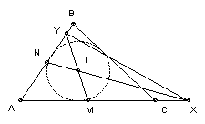
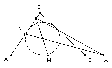

| 1. Is there a positive integer which can be written as the sum of 1990 consecutive positive integers and which can be written as a sum of two or more consecutive positive integers in just 1990 ways? |
|
| 2. 11 countries each have 3 representatives. Is it possible to find 1990 committees C1, C2, ... , C1990 such that each committee has just one representative from each country, no two committees have the same members, and every two committees have at least one member in common except for the pairs (C1, C2), (C2, C3), (C3, C4), ... , (C1991, C1992), (C1992, C1)? |
|
| 4. The set of all positive integers is divided into r disjoint subsets. Show that for one of them we can find a positive integer m such that for any k there are numbers a1 < a2 < ... < ak in the subset with the difference between consecutive numbers in the sequence at most m. | |
| 5. The triangle ABC has unequal sides, centroid G, incenter I and orthocenter H. Show that angle GIH > 90o. |
|
| 7. Define f(0) = 0, f(1) = 0, and f(n+2) = 4n+2f(n+1) - 16n+1f(n) + n 2n2. Show that f(1989), f(1990) and f(1991) are all divisible by 13. |
|
| 8. For a positive integer k, let f1(k) be the square of the sum of its digits. Let fn+1(k) = f1( fn(k) ). Find the value of f1991(21990). | |
|
9. ABC is a triangle with incenter I. M is the midpoint of AC and N is the midpoint of AB. The lines NI and AC meet at X, and the lines MI and AB meet at Y. The triangles AXY and ABC have the same area. Find ∠A.
 |
|
| 10. A plane cuts a right circular cone of volume V into two parts. The plane is tangent to the circumference of the base of the cone and passes through the midpoint of the altitude. Find the volume of the smaller part. | |
| 12. ABC is a triangle with angle bisectors AD and BF. The lines AD, BF meet the line through C parallel to AB at E and G respectively, and FG = DE. Show that CA = CB. |
|
| 13. A gymnast ascends a ladder of n steps A steps at a time and descends B steps at a time. Find the smallest n such that starting from the bottom, he can get to the top and back again. Note that he does not have to go directly to the top. For example, if A = 3, B = 2, then n = 4 works: 0 3 1 4 2 0. | |
| 14. R is the rectangle with vertices (0, 0), (m, 0), (0, n), (m, n), where m and n are odd integers. R is divided into triangles. Each triangle has at least one good side which lies on a line of the form x = i or y = j, where i and j are integers, and has the altitude to this side of length 1. Any side which is not a good side is a common side to two triangles. Show that there are at least two triangles each with two good sides. | |
| 15. For which k can the set {1990, 1991, 1992, ... , 1990 + k} be divided into two disjoint subsets with equal sums? | |
| 17. Holes are drilled through a long diagonal of each of pqr unit cubes and the cubes are threaded are put onto a string. For which p, q, r can the cubes be arranged to form a p x q x r cube (whilst still on the string and with neighbouring cubes on the string continuing to touch at their adjacent vertices)? Suppose that the ends of the string are tied to form a loop so that every cube touches two neighbouring cubes. For which p, q, r can a cube be made now? | |
| 18. a <= b are positive integers, m = (a + b)/2. Define the function f on the integers by f(n) = n + a if n < m, n - b if n ≥ m. Let f1(n) = f(n), f2(n) = f( f1(n) ), f3(n) = f( f2(n) ) etc. Find the smallest k such that fk(0) = 0. | |
| 19. P is a point inside a regular tetrahedron of unit volume. The four planes through P parallel to the faces of the tetrahedron partition it into 14 pieces. Let v(P) be the total volume of the pieces which are neither a tetrahedron nor a parallelepiped (in other words, the pieces which are adjacent to an edge, but not to a vertex). Find the smallest and largest possible values for v(P). | |
| 20. Show that every positive integer n > 1 has a positive multiple less than n4 which uses at most 4 different digits. |
|
| 21. Ten cities are served by two airlines. All services are both ways. There is a direct service between any two cities. Show that at least one of the airlines can offer two disjoint round trips, each with an odd number of landings. | |
| 23. w, x, y, z are non-negative reals such that wx + xy + yz + zw = 1. Show that w3/(x + y + z) + x3/(w + y + z) + y3/(w + x + z) + z3/(w + x + y) ≥ 1/3. |
|
| 25. Let p(x) be a cubic polynomial with rational coefficients. q1, q2, q3, ... is a sequence of rationals such that qn = p(qn+1) for all positive n. Show that for some k, we have qn+k = qn for all positive n. | |
| 26. Find all positive integers n such that every positive integer with n digits, one of which is 7 and the others 1, is prime. |
|
| 27. Show that it is not possible to find a finite number of points P1, P2, ... , Pn in the plane such that each point has rational coordinates, each edge P1P2, P2P3, P3P4, ... , Pn-1Pn, PnP1 has length 1, and n is odd. | |
| Note: problems 3, 6, 11, 16, 22 and 24 were used in the Olympiad and are not shown here. |

Shortlist home
© John Scholes
jscholes@kalva.demon.co.uk
12 August 2002
Last updated/corrected 12 Jan 2004